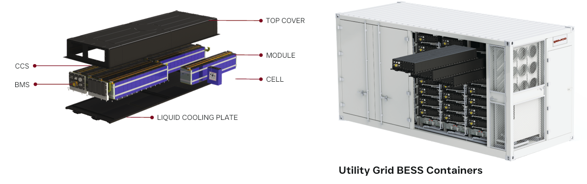
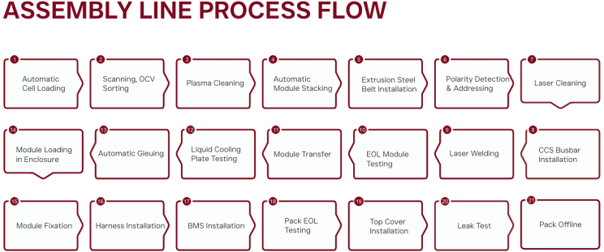
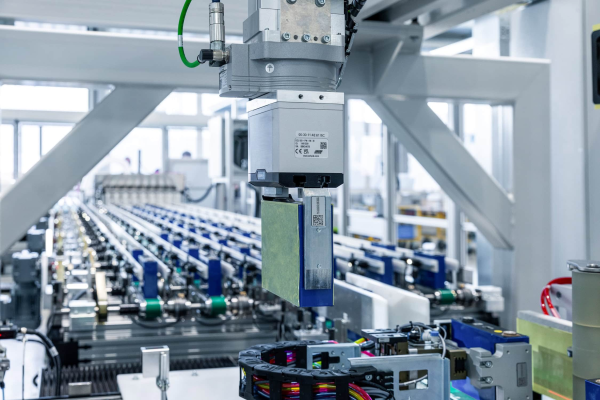
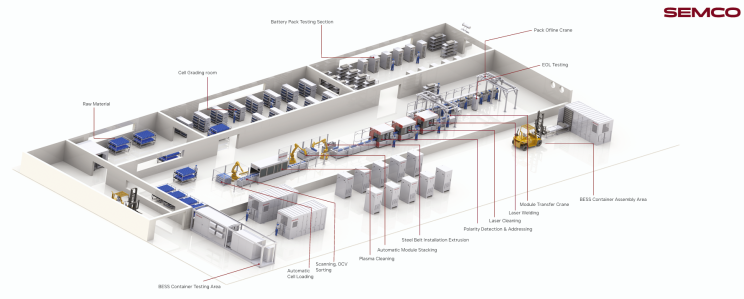
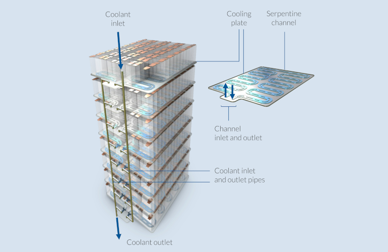
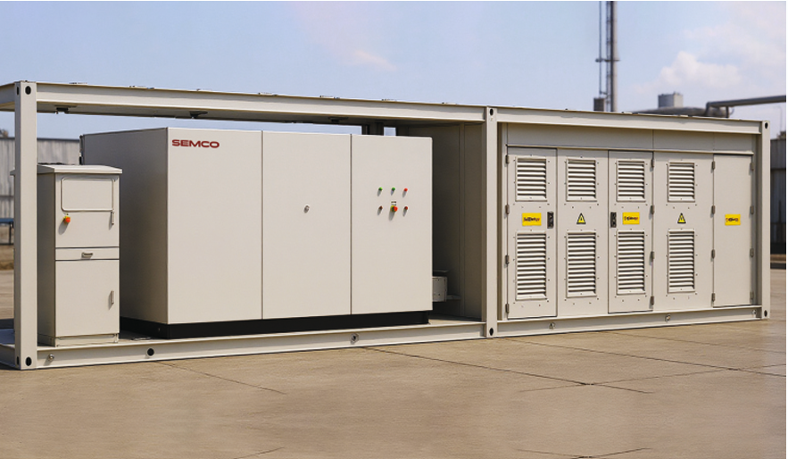
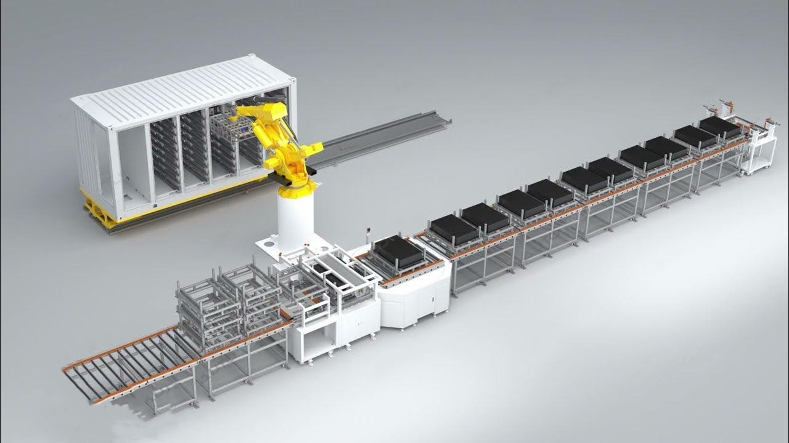

The evolution of Battery Energy Storage Systems (BESS) has fundamentally transformed India's energy landscape, and at the core of this transformation lies advanced manufacturing automation. An end-to-end automatic BESS assembly line represents a comprehensive manufacturing ecosystem that orchestrates the seamless integration of lithium-ion cells into fully containerized energy storage solutions, enabling manufacturers to deliver high-quality, reliable products at scale.

The Complete Assembly Ecosystem
Modern automatic BESS assembly lines represent a paradigm shift in how battery energy storage systems are manufactured. Rather than treating assembly as isolated, disconnected processes, contemporary automation solutions integrate 21 sequential operations from initial cell loading through final pack validation, creating what industry experts term a "cell-to-container solution." This comprehensive approach eliminates bottlenecks, ensures traceability, and establishes consistent quality standards throughout the production workflow.
The architecture of such systems typically encompasses distinct operational zones: a cell grading room for initial testing and sorting, a module assembly area featuring robotic precision systems, a battery pack testing section with advanced diagnostic capabilities, and a containerized BESS assembly area that integrates complete packs into deployment-ready units.

Stage 1: Cell Reception and Grading
The journey begins with automatic cell loading, a critical operation that establishes the foundation for all subsequent processes. Incoming lithium-ion cells enter the assembly line through automated feeding systems that handle multiple cell form factors, including prismatic, cylindrical, and pouch cells. The system's ability to accommodate diverse cell geometries and specifications reflects the flexibility required in India's growing energy storage sector, where manufacturers serve varying customer requirements and grid-stabilization applications.
Stage 2: Cell Testing and Sorting
Following initial loading, cells undergo comprehensive testing through scanning and Open Circuit Voltage (OCV) analysis. This critical phase involves measuring voltage, capacity, and internal resistance for each individual cell, with measurements typically collected through high-throughput testing systems designed for accuracy in high-volume production environments.
The subsequent sorting process implements industry-standard binning philosophy, commonly known as the 1-2-1 principle: cells within 1% voltage variation, 2% capacity variation, and 1% internal resistance variation are grouped together. This meticulous sorting ensures that grouped cells operate with synchronized performance characteristics, directly enhancing the overall reliability and cycle life of the final battery pack. Advanced automation handles this sorting with speeds exceeding 500-1000 cells per hour, enabling substantial production throughput.

Stage 3: Surface Preparation and Cleaning
Before assembly, cells require rigorous surface preparation using two complementary cleaning technologies. Plasma cleaning removes particulates and contaminants from cell surfaces, while laser cleaning provides precision surface treatment in targeted areas. These operations are fundamental to preventing impurities that could compromise electrical performance or safety during operation.
Stage 4: Module Assembly and Interconnection
The transition from individual cells to organized modules involves several integrated steps. Automatic module stacking arranges graded cells into precise configurations, followed by the installation of extrusion steel belts that provide mechanical support and structural integrity. This is complemented by polarity detection and addressing systems that verify correct positive and negative terminal orientation, preventing potentially hazardous assembly errors.
Laser welding then creates durable electrical connections between cells, establishing series and parallel configurations that achieve target module voltage and capacity specifications. Contemporary laser welding systems feature integrated quality verification, ensuring consistent weld penetration and electrical conductivity. Thermal imaging and optical inspection systems validate every weld before progression to subsequent stages.

Stage 5: Module Integration and System Assembly
Once modules are assembled and tested, they progress to automatic module loading in enclosures, where protective casings shield modules from physical damage and environmental exposure. The system integrates automatic gluing and liquid cooling plate installation, establishing thermal management pathways essential for maintaining safe operating temperatures during charge-discharge cycles.
CCS (Common Cooling System) busbar installation follows, connecting series-parallel module combinations while maintaining structural integrity. This is succeeded by end-of-line module testing, which validates that each module meets voltage, capacity, and impedance specifications before pack-level integration.

Stage 6: Battery Pack Assembly
The module-to-pack transformation involves module transfer systems that autonomously transport completed modules from testing stations to pack assembly areas. Here, modules are configured in series and parallel combinations to achieve final pack specifications, addressing specific customer voltage and capacity requirements for varying grid applications, industrial backup systems, and renewable energy integration scenarios.
Harness installation establishes electrical connections between modules, while BMS installation integrates the Battery Management System—the intelligent control backbone that monitors cell voltages, manages charging cycles, regulates temperature, and ensures safety throughout the pack's operational life. The BMS continuously collects data that enables advanced diagnostics, predictive maintenance algorithms, and performance optimization.
Stage 7: Comprehensive Pack Validation
End-of-line pack testing subjects each assembled pack to rigorous validation protocols. These tests verify charging uniformity across all cells, measure voltage and impedance, confirm insulation integrity, and validate BMS functionality under simulated operating conditions. High-voltage testing ensures the pack can safely manage the electrical loads encountered during grid-scale deployments.
Leak testing confirms the integrity of sealed enclosures, preventing electrolyte leakage that could compromise performance or create safety hazards. Top cover installation follows, establishing the final protective barrier before module fixation, which secures all internal components against mechanical stress during transportation and installation.
Stage 8: Containerization and Final Deployment Preparation
The culmination involves pack offline utilities, where completed packs integrate into containerized BESS systems. BESS container testing represents final validation, conducting full-scale charge-discharge cycles, thermal stress testing, and safety verification under simulated grid conditions. This comprehensive containerized system validation ensures readiness for immediate deployment into stationary energy storage applications.

Technological Enablers and Quality Assurance
Modern automatic BESS assembly lines leverage several advanced technologies that distinguish contemporary systems from conventional manual approaches. MES (Manufacturing Execution System) integration enables real-time process monitoring, quality control data collection, and traceability across all 21 assembly stages. Every cell, module, and pack generates a complete digital record, enabling root-cause analysis if field performance issues arise and supporting rapid quality interventions.
Robotic precision systems handle sensitive operations—including plasma and laser cleaning, laser welding, and automated gluing—with repeatability and speed impossible to achieve through manual labor. Computer vision systems conduct optical inspection at critical junctures, detecting surface defects, verifying component positioning, and confirming welding quality.

Production Throughput and Scalability
Modern automatic BESS assembly lines are engineered for substantial production capacity. Cell sorting systems process 500-1000 cells per hour, while plasma cleaning stations operate at rates up to 12 cycles per minute. Module stacking, laser welding, and pack assembly proceed with comparable efficiency, enabling manufacturers to scale from pilot production to full commercial volumes without fundamental process redesign.
Industry Impact and National Significance
In India's context, automatic BESS assembly lines directly support the nation's ambitious renewable energy and grid modernization objectives. These systems enable domestic manufacturers to achieve the production scales, quality consistency, and manufacturing costs required to compete in both domestic and export markets. Companies deploying such technology position themselves to capture growing demand from utility-scale solar installations, industrial backup systems, and grid-stabilization initiatives aligned with India's renewable energy targets.
Know More About Semco Infratech's BESS Assembly Solutions
Explore how Semco Infratech's automatic BESS assembly lines can transform your battery manufacturing operations. The company offers comprehensive solutions tailored to your production scale—from startup R&D operations to full commercial manufacturing volumes. Semco's integrated approach combines state-of-the-art equipment, intelligent process management, and expert technical support to establish efficient, scalable battery production capabilities.
Contact Semco Infratech to discuss your BESS manufacturing requirements and discover how automatic assembly solutions can enhance your production efficiency, ensure product quality, and accelerate your path to market competitiveness.
For demos, solutions, or collaborations:
Connect at sales@semcoindia.com | +91-8920681227 | www.semcoinfratech.com
Learn about:
- Complete cell-to-container assembly line solutions
- Customized line design and implementation support
- Advanced testing and quality assurance systems
- Training and post-installation technical support
- Scalable solutions for your production volumes
Take the next step toward manufacturing excellence with Semco Infratech—India's trusted partner for automatic BESS assembly solutions.